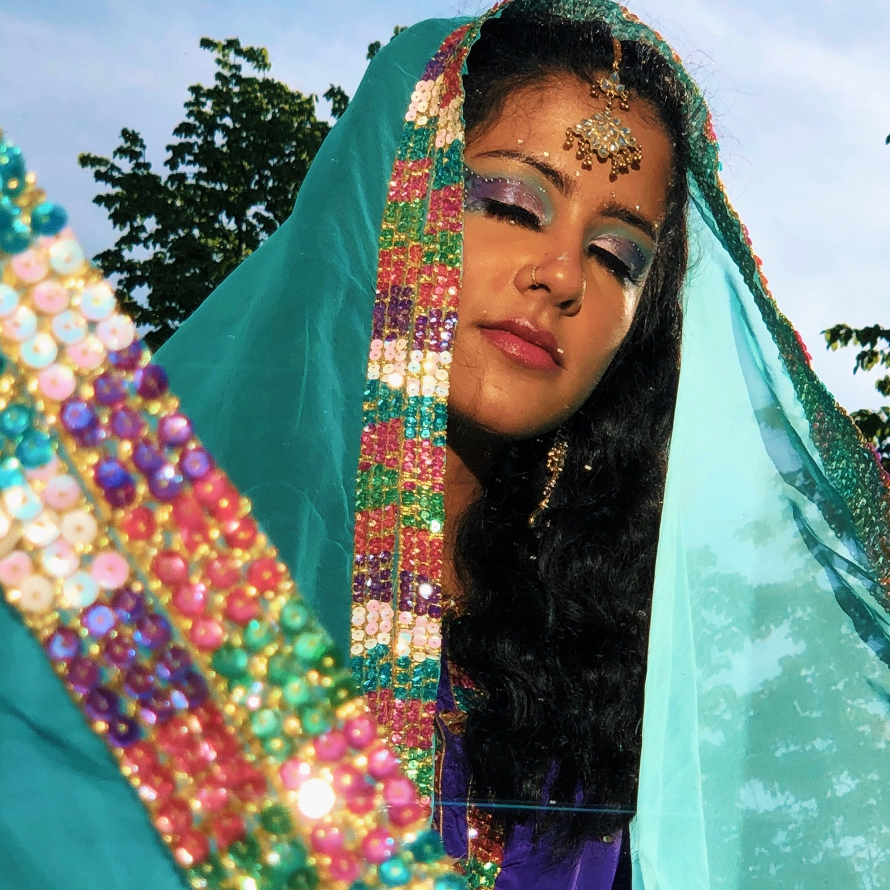
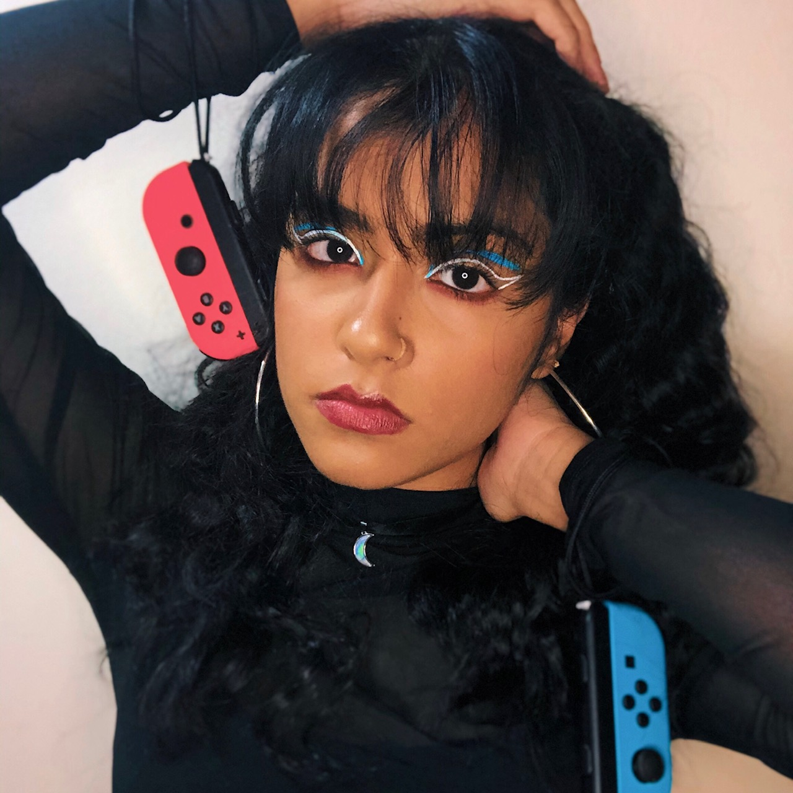
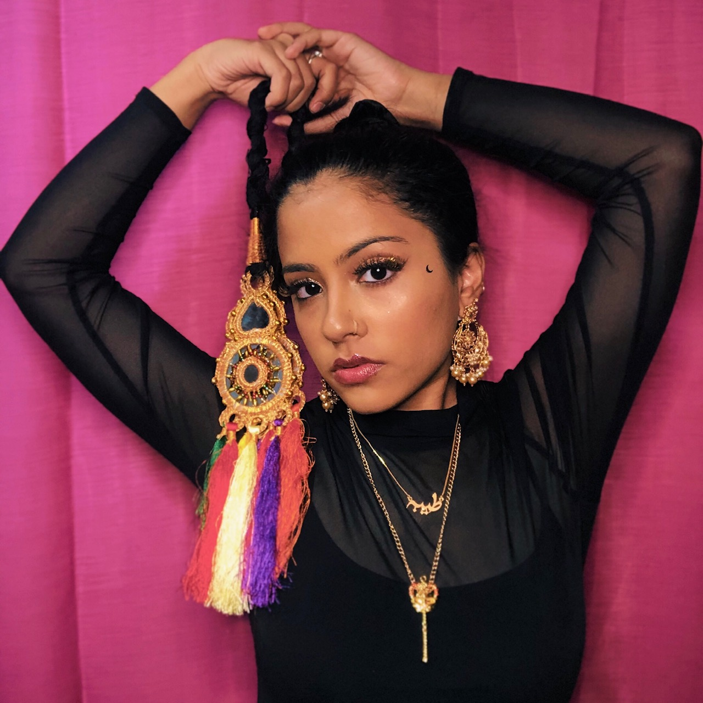
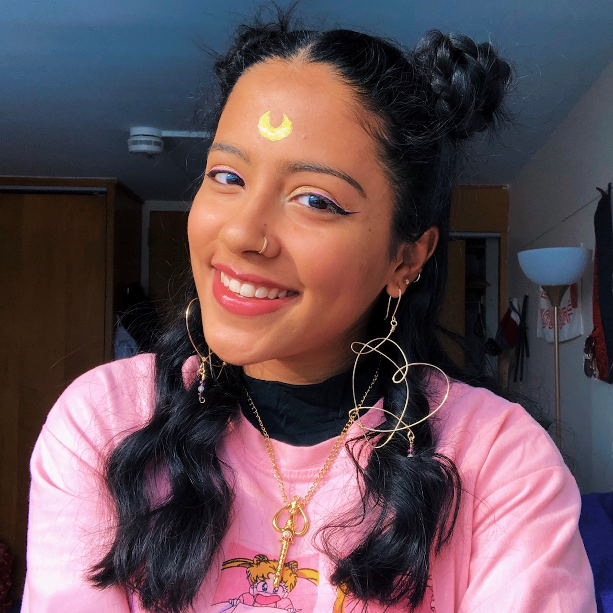
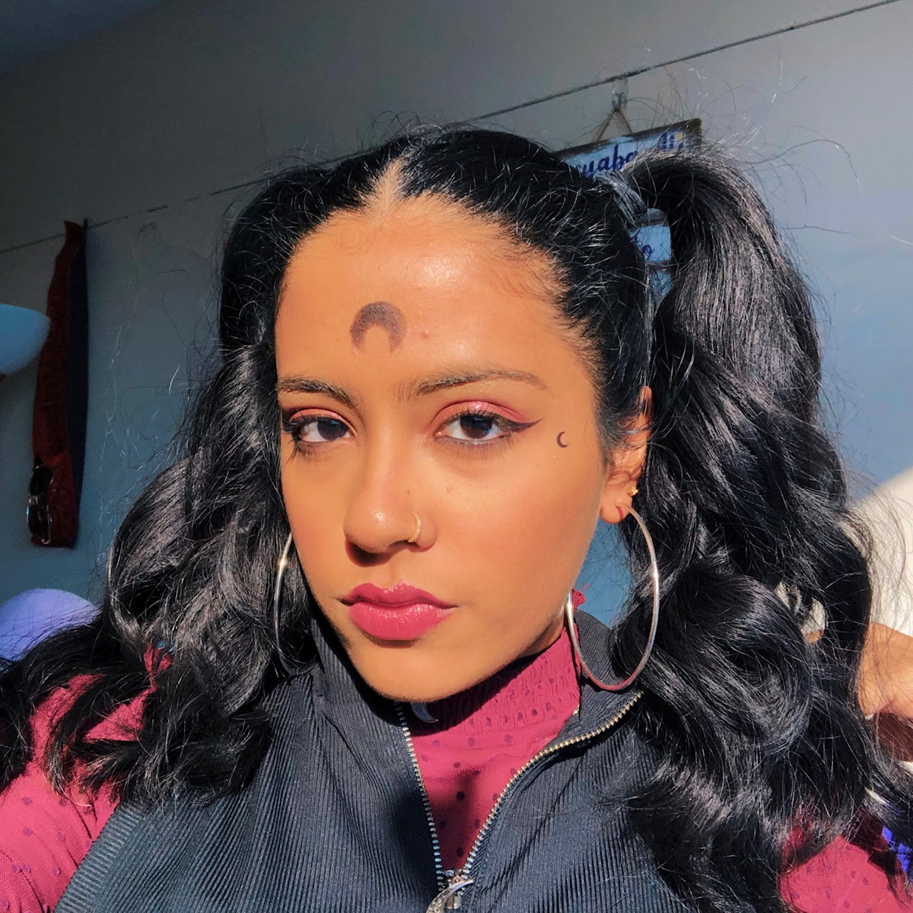
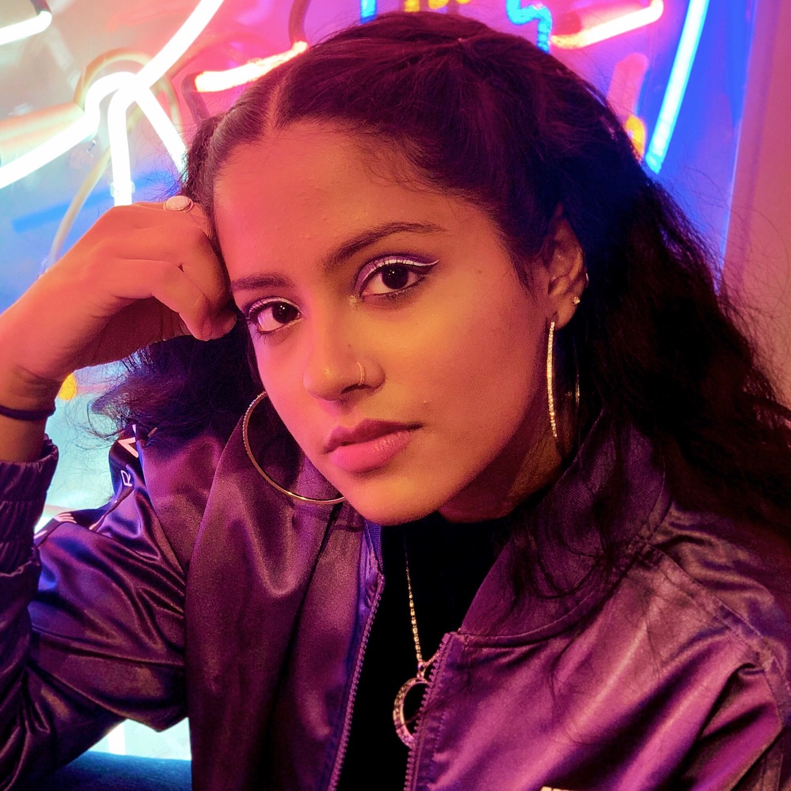
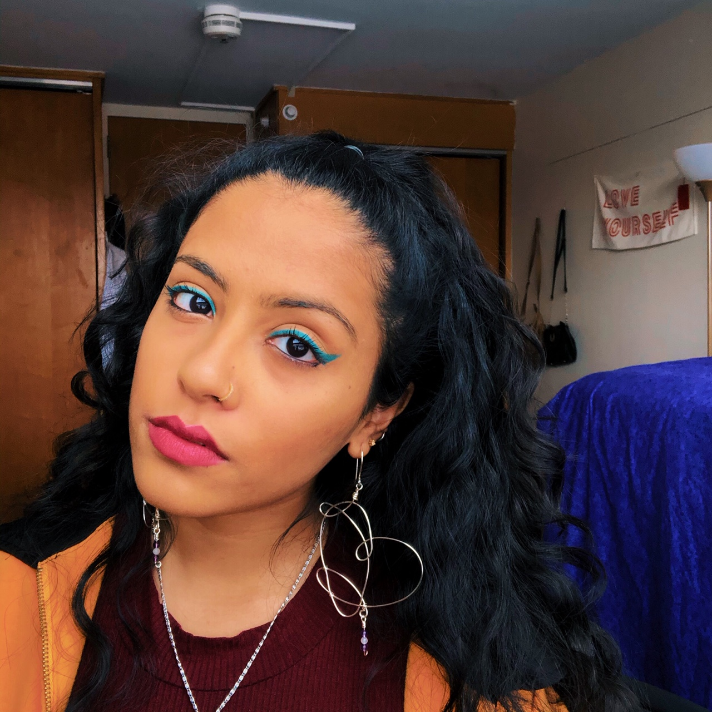

Tayyaba's Portfolio
Hi! My name is Tayyaba and welcome to my page! I am an undergraduate student at Cornell University, Class of 2022. I am majoring in Computer Science and Asian Studies. A lot of people ask me why I chose those two majors since they appear to be very different. Truthfully, I enjoy STEM and Humanities a lot, and believe that they are equally as important. In Asian Studies, I mostly focus on Japan and South Asia, and am currently studying Japanese. I was supposed to study abroad in Japan, Fall 2020, but due to recent events, that has been postponed to Spring 2021, fingers crossed! If you'd like to learn more about some of my projects or my previous experiences, please check out my LinkedIn and GitHub.
A little more about me is that I really enjoy expressing my creative side in many ways, from graphic design to trying out new makeup looks! I also really embrace the idea of being a life-long learner and enjoy expanding my knowledge on topics related to social justice, technology and food. One of my recent goals is to get back into reading, if you have any suggestions that you think I’ll enjoy, please let me know! The focus of my website will be different topics that I am passionate about, check out the modules to learn more about them. Enjoy!
Press the button to learn a random fact about me:
Women in Tech Graphs
There has always been an uneven distribution between men and women when it comes to the workforce, but especially in the field of technology. I created the pie chart below with data from the National Girls Collaborative Project (NGCP). As you can see, there is a stark difference in the percentages, and this chart does not show the distribution of Womxn of Color (WOC).
Based on data collected in 2015 from The National Center for Education Statistics,
these are the percentages of WOC who earned STEM degrees in higher education institutions.
Black women: 2.9%
Latinx Womxn: 3.8%
Asian womxn: 5%
Since womxn and especially WOC have historically lacked proper representation in STEM education and the STEM workforce, many WOC feel unwelcome in their environments and are underpaid. This leads many of them to leave their jobs. The goal of institutions should not be just to get more WOC in their programs, but should also be committed to providing them the support needed and stay committed to changing the work environment to recognize womxn’s contributions.
Having fair representation of WOC in STEM is a necessity, without them it is impossible to make products that will satisfy the needs of all users, and deprivation of their contributions will further solidify the biases that are already baked into existing products.
SOURCES: NGCP Statistics, Maryville University Blog
Photo Gallery
I'd love to share some photos with you all.
Makeup Gallery
      My Favorite Places to Eat
Check out the markers to see my favorite restaurants!
There's 11 places... try to find them all!
Share your thoughts:
Delete Comments
Press button to delete comments.
Comments
Pick number of comments to view